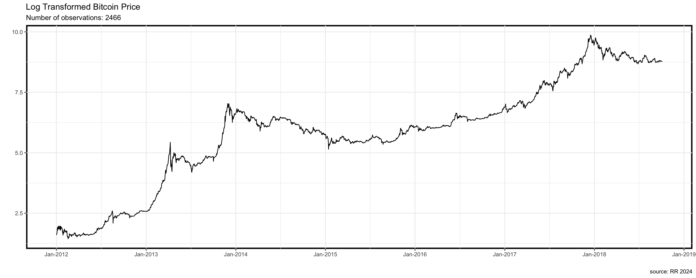

library(tidyverse)
library(xts)
library(lmtest)
library(tseries)
library(urca)
library(fUnitRoots)
library(quantmod)Next-Day Bitcoin Price Forecast
Required libraries
Read bitcoin csv daily price
quotes_bitcoin <- read_csv("../data/Bitcoin_01_01_2012-04_10_2018_historical_data_coinmarketcap.csv",
col_select = c(timeOpen,close))We can examine structure of the resulting object:
head(quotes_bitcoin)# A tibble: 6 × 2
timeOpen close
<dttm> <dbl>
1 2018-10-03 00:00:00 6503.
2 2018-10-02 00:00:00 6556.
3 2018-10-01 00:00:00 6590.
4 2018-09-30 00:00:00 6626.
5 2018-09-29 00:00:00 6602.
6 2018-09-28 00:00:00 6644.tail(quotes_bitcoin)# A tibble: 6 × 2
timeOpen close
<dttm> <dbl>
1 2012-01-06 00:00:00 6.60
2 2012-01-05 00:00:00 6.67
3 2012-01-04 00:00:00 5.55
4 2012-01-03 00:00:00 4.90
5 2012-01-02 00:00:00 5.22
6 2012-01-01 00:00:00 5.13glimpse(quotes_bitcoin)Rows: 2,468
Columns: 2
$ timeOpen <dttm> 2018-10-03, 2018-10-02, 2018-10-01, 2018-09-30, 2018-09-29, …
$ close <dbl> 6502.59, 6556.10, 6589.62, 6625.56, 6601.96, 6644.13, 6676.75…Let’s also check the class of the Date column:
class(quotes_bitcoin$timeOpen)[1] "POSIXct" "POSIXt" lets check structure of the whole dataset
str(quotes_bitcoin)tibble [2,468 × 2] (S3: tbl_df/tbl/data.frame)
$ timeOpen: POSIXct[1:2468], format: "2018-10-03" "2018-10-02" ...
$ close : num [1:2468] 6503 6556 6590 6626 6602 ...
- attr(*, "spec")=
.. cols(
.. timeOpen = col_datetime(format = ""),
.. timeClose = col_skip(),
.. timeHigh = col_skip(),
.. timeLow = col_skip(),
.. name = col_skip(),
.. open = col_skip(),
.. high = col_skip(),
.. low = col_skip(),
.. close = col_double(),
.. volume = col_skip(),
.. marketCap = col_skip(),
.. timestamp = col_skip()
.. )Let’s transform timeOpen into date:
quotes_bitcoin$timeOpen <- as.Date(quotes_bitcoin$timeOpen, format = "%Y-%m-%d")We have to give the format in which date is originally stored: * %y means 2-digit year, * %Y means 4-digit year * %m means a month * %d means a day
class(quotes_bitcoin$timeOpen)[1] "Date"head(quotes_bitcoin)# A tibble: 6 × 2
timeOpen close
<date> <dbl>
1 2018-10-03 6503.
2 2018-10-02 6556.
3 2018-10-01 6590.
4 2018-09-30 6626.
5 2018-09-29 6602.
6 2018-09-28 6644.glimpse(quotes_bitcoin)Rows: 2,468
Columns: 2
$ timeOpen <date> 2018-10-03, 2018-10-02, 2018-10-01, 2018-09-30, 2018-09-29, …
$ close <dbl> 6502.59, 6556.10, 6589.62, 6625.56, 6601.96, 6644.13, 6676.75…Now R understands this column as dates
Creating xts objects
quotes_bitcoin <-
xts(quotes_bitcoin[, -1], # data columns (without the first column with date)
quotes_bitcoin$timeOpen) # date/time indexLets see the result:
head(quotes_bitcoin) close
2012-01-01 5.132450
2012-01-02 5.218210
2012-01-03 4.898447
2012-01-04 5.546638
2012-01-05 6.671950
2012-01-06 6.602055str(quotes_bitcoin)An xts object on 2012-01-01 / 2018-10-03 containing:
Data: double [2468, 1]
Columns: close
Index: Date [2468] (TZ: "UTC")Finally, let’s use the ggplot2 package to produce nice visualization. ## The ggplot2 package expects data to be in long format, rather than wide format. ## Hence, first we have to convert the tibble to a long tibble:## Plotting Actual Bitcoin Price
Data
tibble(df = quotes_bitcoin) %>%
ggplot(aes(zoo::index(quotes_bitcoin), df)) +
geom_line() +
theme_bw() +
scale_x_date(date_breaks = "1 year", date_labels = "%b-%Y")+
labs(
title = "Actual Bitcoin Price",
subtitle = paste0("Number of observations: ", length(quotes_bitcoin)),
caption = "source: RR 2024",
x="",
y=""
)Plotting Log Transformed Bitcoin Price
tibble(df = quotes_bitcoin) %>%
ggplot(aes(zoo::index(quotes_bitcoin), log(quotes_bitcoin))) +
geom_line() +
theme_bw() +
scale_x_date(date_breaks = "1 year", date_labels = "%b-%Y")+
labs(
title = "Log Transformed Bitcoin Price",
subtitle = paste0("Number of observations: ", length(quotes_bitcoin)),
caption = "source: RR 2024",
x="",
y=""
)
Plotting 1st Difference Log Operator
tibble(df = quotes_bitcoin) %>%
ggplot(aes(zoo::index(quotes_bitcoin), periodReturn(quotes_bitcoin, period="daily", type="log"))) +
geom_line() +
theme_bw() +
scale_x_date(date_breaks = "1 year", date_labels = "%b-%Y")+
labs(
title = "1st Difference Log Operator",
subtitle = paste0("Number of observations: ", length(quotes_bitcoin)),
caption = "source: RR 2024",
x="",
y=""
)